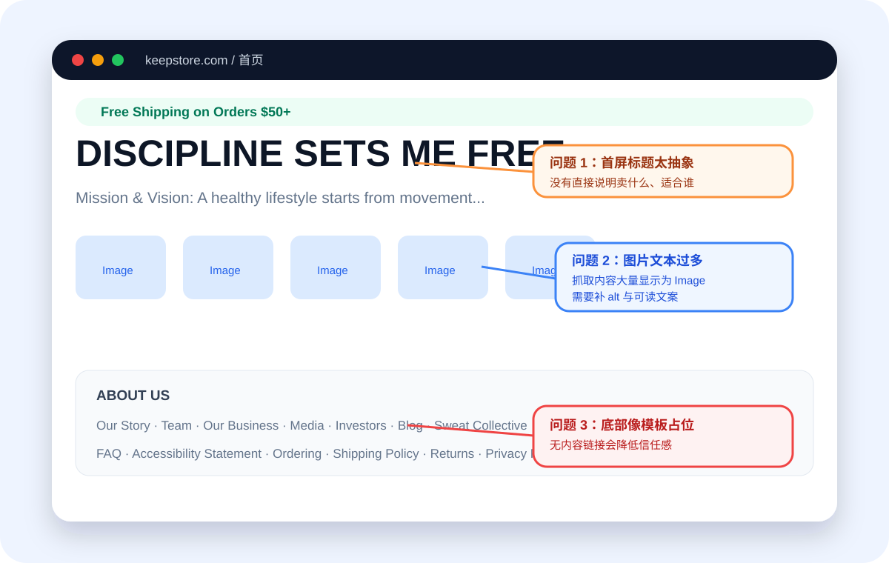
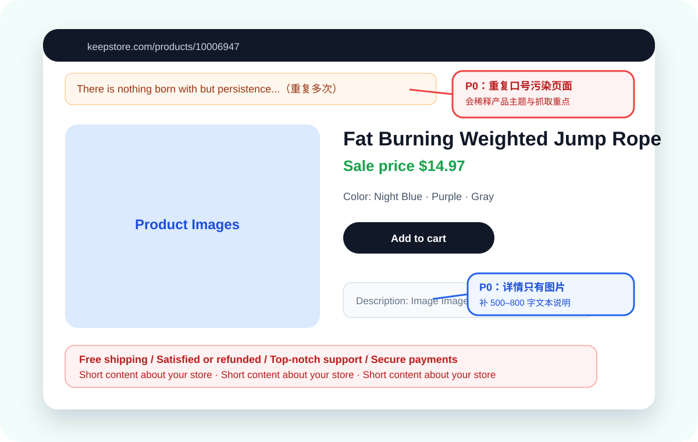
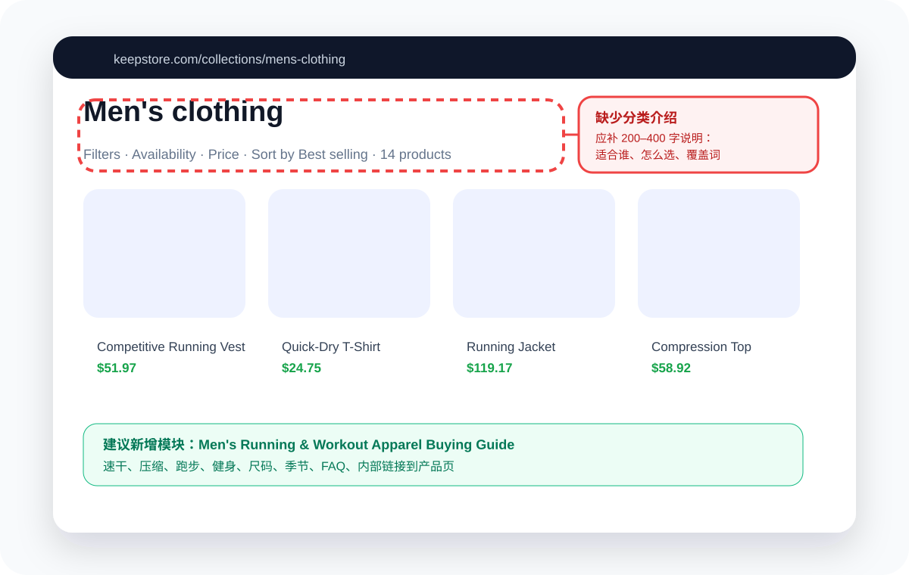
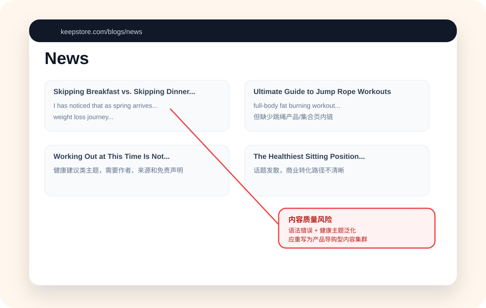
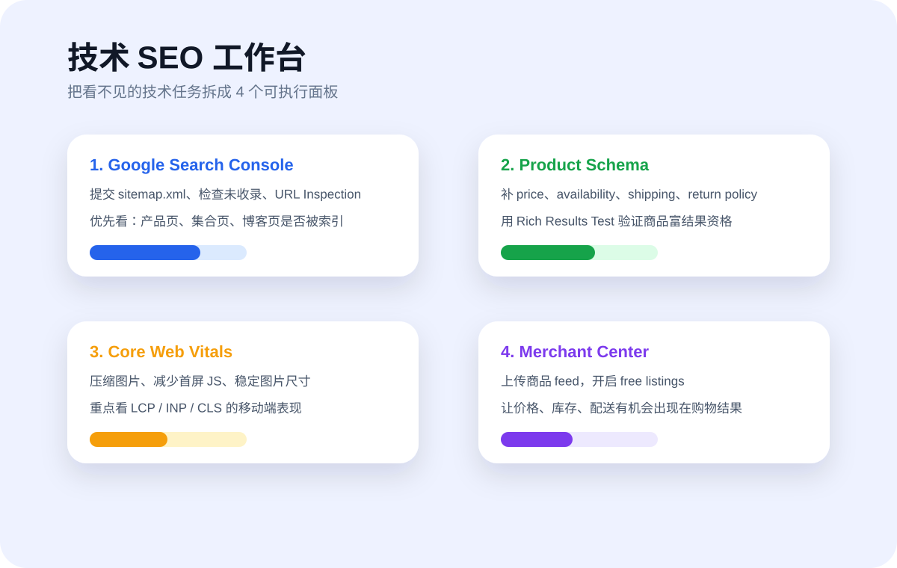

被发现
sitemap、链接、索引、robots 不阻挡。
重新设计版 · 面向完全不懂 SEO 的独立站团队
这版不再只是文字报告，而是一个“诊断工作台”：用页面定位图告诉你问题在哪里，用优先级告诉你先改什么，用模板告诉你具体怎么写。
先建立共同语言
Google 官方也强调，SEO 是帮助搜索引擎理解内容，并帮助用户通过搜索结果判断是否访问网站。对独立站来说，最终目标不是“排名好看”，而是搜索用户能找到、看懂、信任并购买。
sitemap、链接、索引、robots 不阻挡。
标题、正文、分类介绍、图片 alt 说清楚卖什么。
评价、配送、退换、品牌故事、联系方式完整。
产品卖点、FAQ、规格、使用场景降低决策成本。
页面截图式定位
当前云端环境没有浏览器截图能力，因此这里先放“基于公开抓取内容复刻的页面定位图”。它的目的和截图一样：让运营能知道问题出现在首页、产品页、集合页还是博客页的哪个区域；后续可直接把真实截图替换到同名文件。





补充研究后的优化空间
下面每张卡片都标注了优先级、影响页面、为什么影响 SEO、以及小白可以怎么验收。
产品页、集合页顶部多次出现 “There is nothing born...” 这类重复文本，会让搜索引擎抓取重点偏离商品主题。
验收：每个页面只保留 0–1 次品牌口号，首屏先出现页面主标题。跳绳产品详情公开抓取中主要是 Image，Google 和用户都难以快速理解规格、卖点、适用人群。
验收：前 20 个核心产品每页补 500–800 字英文描述 + FAQ + 规格表。“Short content about your store” 出现在配送、退款、客服、安全支付等模块，是非常明显的未完工信号。
验收：所有信任模块改成真实政策、时效、联系方式和支付说明。Men's clothing 有 14 个产品和筛选，但没有解释“适合谁、如何选择、覆盖哪些关键词”。
验收：8 个主集合页每页补 200–400 字分类文案 + 3 个 FAQ。Our Story、Team、Media、Investors 等如果没有真实页面，会让站点看起来不完整。
验收：无内容链接删除；保留链接必须有真实页面、标题和正文。电商页应明确传递价格、库存、配送、退换、评分等信息，争取商品富结果和购物展示资格。
验收：Rich Results Test 无关键错误，Merchant Center 商品 feed 可用。博客有减脂、睡眠、跳绳主题，但需要变成内容集群并自然链接到商品和集合页。
验收：每篇文章 3–5 个内链，至少 3 个内容集群：跳绳、跑步服饰、恢复。首页和详情页图片很多，可能影响 LCP、CLS、移动端加载和交互体验。
验收：首屏图压缩为 WebP/AVIF，图片设宽高，非首屏 lazy-load。减脂、睡眠、疾病运动建议属于高敏感内容，必须更谨慎，避免夸张承诺。
验收：补作者、更新时间、参考来源、免责声明，并减少绝对化表述。具体怎么改
DISCIPLINE SETS ME FREE 有品牌感，但搜索用户不知道这里卖健身器材、服饰还是课程。
H1：Fitness Gear & Workout Essentials for Home Training
副标题：Shop workout gear, running apparel, yoga accessories and recovery tools.
不要随机写健康文章；围绕商品建主题。例如“跳绳入门 → 加重跳绳对比 → 10 分钟训练 → 跳绳产品页”。
Free shipping：Orders over $50 ship free. Most orders are processed in 1–3 business days. Need help? Contact hi@keepstore.com.
Search Console 看未收录、Rich Results Test 看商品 Schema、PageSpeed 看 LCP/INP/CLS、Merchant Center 看商品状态。
执行路径
互动验收